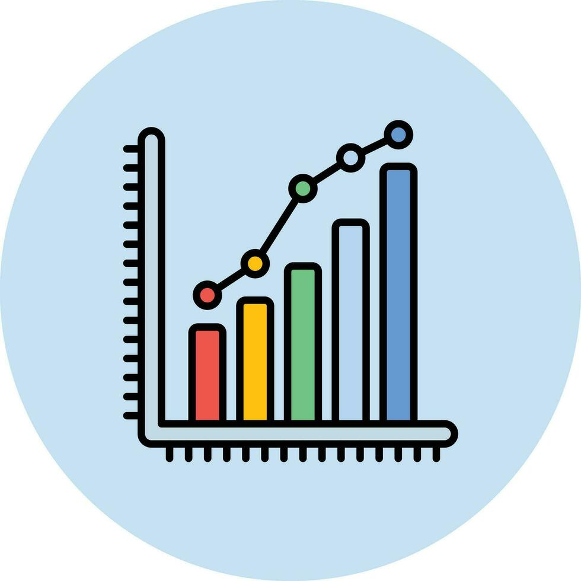

| ESTADÍSTICAS |
Interrupción del Sueño: Un estudio de 2020 encontró que el 71% de los adolescentes duermen con su teléfono móvil a su lado, y el 45% reporta problemas para dormir debido al uso de dispositivos electrónicos antes de acostarse.
Duración del Sueño: Las personas que usan sus móviles durante más de dos horas antes de acostarse tienen un 30% más de probabilidades de dormir menos de siete horas por noche.
Ansiedad y Depresión: Un estudio de 2022 encontró que el uso excesivo de redes sociales, accesibles a través de móviles, está asociado con un aumento del 15% en los síntomas de ansiedad y un 20% en los síntomas de depresión entre los jóvenes adultos.
Nomofobia: Alrededor del 66% de la población experimenta algún nivel de ansiedad cuando se queda sin su móvil, un fenómeno conocido como nomofobia (miedo a estar sin el móvil).
